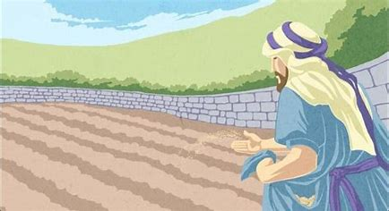
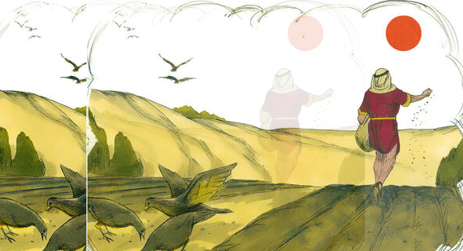

1 Tendo Jesus saído de casa, naquele dia, estava assentado junto ao mar;
2 E ajuntou-se muita gente ao pé dele, de sorte que, entrando num barco, se assentou; e toda a multidão
estava em pé na praia.
3 E falou-lhe de muitas coisas por parábolas, dizendo: Eis que o semeador saiu a semear.
4 E, quando semeava, uma parte da semente caiu ao pé do caminho, e vieram as aves, e comeram-na;
5 E outra parte caiu em pedregais, onde não havia terra bastante, e logo nasceu, porque não tinha terra
funda;
6 Mas, vindo o sol, queimou-se, e secou-se, porque não tinha raiz.
7 E outra caiu entre espinhos, e os espinhos cresceram e sufocaram-na.
8 E outra caiu em boa terra, e deu fruto: um a cem, outro a sessenta e outro a trinta.
9 Quem tem ouvidos para ouvir, ouça.
10 E, acercando-se dele os discípulos, disseram-lhe: Por que lhes falas por parábolas?
11 Ele, respondendo, disse-lhes: Porque a vós é dado conhecer os mistérios do reino dos céus, mas a eles
não lhes é dado;
12 Porque àquele que tem, se dará, e terá em abundância; mas àquele que não tem, até aquilo que tem lhe
será tirado.
13 Por isso lhes falo por parábolas; porque eles, vendo, não vêem; e, ouvindo, não ouvem nem
compreendem.
14 E neles se cumpre a profecia de Isaías, que diz:Ouvindo, ouvireis, mas não compreendereis,e, vendo,
vereis, mas não percebereis.
15 Porque o coração deste povo está endurecido,E ouviram de mau grado com seus ouvidos,E fecharam seus
olhos;Para que não vejam com os olhos,
E ouçam com os ouvidos,e compreendam com o coração,e se convertam,e eu os cure.
16 Mas, bem-aventurados os vossos olhos, porque vêem, e os vossos ouvidos, porque ouvem.
17 Porque em verdade vos digo que muitos profetas e justos desejaram ver o que vós vedes, e não o viram;
e ouvir o que vós ouvis, e não o ouviram.
18 Escutai vós, pois, a parábola do semeador.
19 Ouvindo alguém a palavra do reino, e não a entendendo, vem o maligno, e arrebata o que foi semeado no
seu coração; este é o que foi semeado ao pé do caminho.
20 O que foi semeado em pedregais é o que ouve a palavra, e logo a recebe com alegria;
21 Mas não tem raiz em si mesmo, antes é de pouca duração; e, chegada a angústia e a perseguição, por
causa da palavra, logo se ofende;
22 E o que foi semeado entre espinhos é o que ouve a palavra, mas os cuidados deste mundo, e a sedução
das riquezas sufocam a palavra, e fica infrutífera;
23 Mas, o que foi semeado em boa terra é o que ouve e compreende a palavra; e dá fruto, e um produz cem,
outro sessenta, e outro trinta.
1 E outra vez começou a ensinar junto do mar, e ajuntou-se a ele grande multidão, de sorte que ele entrou e assentou-se num barco, sobre o mar;
e toda a multidão estava em terra junto do mar.
2 E ensinava-lhes muitas coisas por parábolas, e lhes dizia na sua doutrina:
3 Ouvi: Eis que saiu o semeador a semear.
4 E aconteceu que semeando ele, uma parte da semente caiu junto do caminho, e vieram as aves do céu, e a comeram;
5 E outra caiu sobre pedregais, onde não havia muita terra, e nasceu logo, porque não tinha terra profunda;
6 Mas, saindo o sol, queimou-se; e, porque não tinha raiz, secou-se.
7 E outra caiu entre espinhos e, crescendo os espinhos, a sufocaram e não deu fruto.
8 E outra caiu em boa terra e deu fruto, que vingou e cresceu; e um produziu trinta, outro sessenta, e outro cem.
9 E disse-lhes: Quem tem ouvidos para ouvir, ouça.
10 E, quando se achou só, osque estavam junto dele com os doze interrogaram-no acerca da parábola.
11 E ele disse-lhes: A vós vos é dado saber os mistérios do reino de Deus, mas aos que estão de fora todas estas coisas se dizem por parábolas,
12 Para que, vendo, vejam, e não percebam; e, ouvindo, ouçam, e não entendam; para que não se convertam, e lhes sejam perdoados os pecados.
13 E disse-lhes: Não percebeis esta parábola? Como, pois, entendereis todas as parábolas?
14 O que semeia, semeia a palavra;
15 E, os que estão junto do caminho são aqueles em quem a palavra é semeada; mas, tendo-a eles ouvido,
vem logo Satanás e tira a palavra que foi semeada nos seus corações.
16 E da mesma forma os que recebem a semente sobre pedregais; os quais, ouvindo a palavra, logo com prazer a recebem;
17 Mas não têm raiz em si mesmos, antes são temporãos; depois, sobrevindo tribulação ou perseguição, por causa da palavra, logo se escandalizam.
18 E outros são os que recebem a semente entre espinhos, os quais ouvem a palavra;
19 Mas os cuidados deste mundo, e os enganos das riquezas e as ambições de outras coisas, entrando, sufocam a palavra, e fica infrutífera.
20 E estes são os que foram semeados em boa terra, os que ouvem a palavra e a recebem, e dão fruto, um trinta, e outro sessenta, e outro cem.
1 E aconteceu, depois disto, que andava de cidade em cidade, e de aldeia em aldeia, pregando e anunciando o evangelho do reino de Deus; e os doze iam com ele,
2 E algumas mulheres que haviam sido curadas de espíritos malignos e de enfermidades: Maria, chamada Madalena, da qual saíram sete demônios;
3 E Joana, mulher de Cuza, procurador de Herodes, e Suzana, e muitas outras que o serviam com seus bens.
4 E, ajuntando-se uma grande multidão, e vindo de todas as cidades ter com ele, disse por parábola:
5 Um semeador saiu a semear a sua semente e, quando semeava, caiu alguma junto do caminho, e foi pisada, e as aves do céu a comeram;
6 E outra caiu sobre pedra e, nascida, secou-se, pois que não tinha umidade;
7 E outra caiu entre espinhos e crescendo com ela os espinhos, a sufocaram;
8 E outra caiu em boa terra, e, nascida, produziu fruto, a cento por um. Dizendo ele estas coisas, clamava: Quem tem ouvidos para ouvir, ouça.
9 E os seus discípulos o interrogaram, dizendo: Que parábola é esta?
10 E ele disse: A vós vos é dado conhecer os mistérios do reino de Deus, mas aos outros por parábolas, para que vendo, não vejam, e ouvindo, não entendam.
11 Esta é, pois, a parábola: A semente é a palavra de Deus;
12 E os que estão junto do caminho, estes são os que ouvem; depois vem o diabo, e tira-lhes do coração a palavra, para que não se salvem, crendo;
13 E os que estão sobre pedra, estes são os que, ouvindo a palavra, a recebem com alegria, mas, como não têm raiz, apenas crêem por algum tempo,
e no tempo da tentação se desviam;
14 E a que caiu entre espinhos, esses são os que ouviram e, indo pordiante, são sufocados com os cuidados e riquezas e deleites da vida,
e não dão fruto com perfeição;
15 E a que caiu em boa terra, esses são os que, ouvindo a palavra, a conservam num coração honesto e bom, e dão fruto com perseverança.